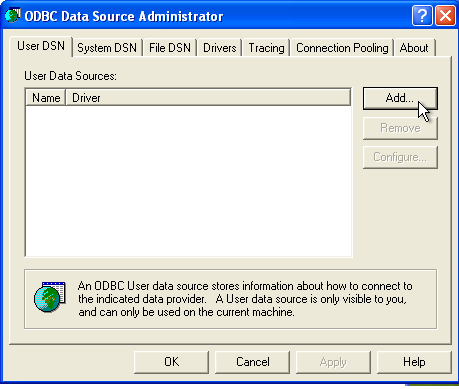
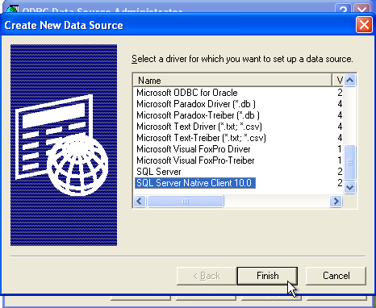
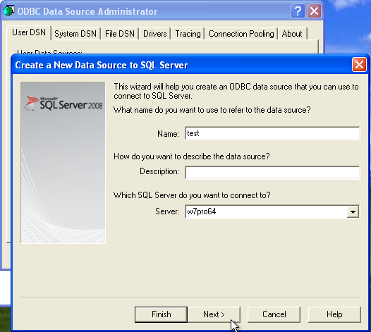
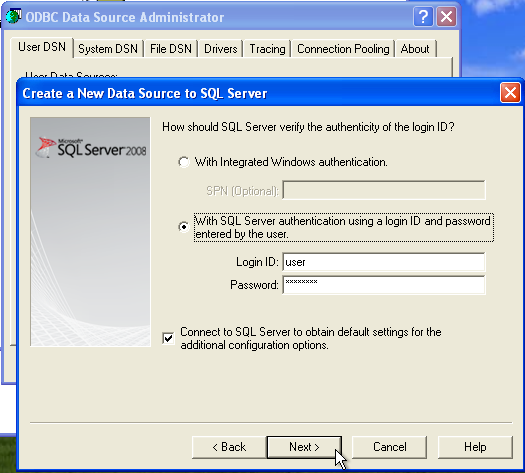
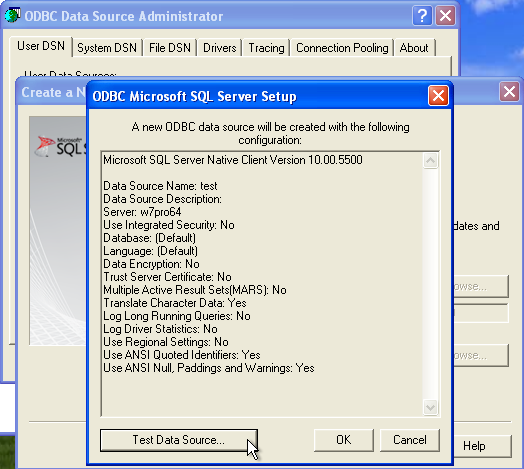

Plugins
PMF uses plugins to access databases. Currently these plugins are
available:
- DB2: Use this to access DB2 via the native DB2-client
- DB2(ODBC): Use this if you prefer to connect via ODBC
- SqlServer: Use this to connect to SqlServer (via ODBC)
- MariaDB: Use this to connect to MariaDB or MySQL
- Postgres: Use this to connect to Postgres
If you build PMF yourself, you can chose which plugins to build.
A plugin can have three states:
- OK: The plugin is loadable and ready for use.
- Missing: The plugins should be located in the folder "plugins" in
the
directory where you installed PMF. If they are missing, reinstall
PMF. If they are not missing, the configuration is wrong. On Linux,
locate the file "pmf6.conf" in your "./config" directory and edit
"pluginPath". On Windows, search the registry (with regedt32) and
locate the key "pluginPath". Change or delete this key.
- Not loadable: Some database-specific DLLs or libraries are not
installed on your system. Check those:
- On Windows:
- DB2: "DB2APP.DLL"
- SqlServer: "ODBC232.DLL"
- MariaDB: "libmariadb.dll"
- Postgres: "libpq.dll"
- On Linux:
- DB2: "libdb2.so.(x)"
- SqlServer: "libodbc.so"
- MariaDB: "libmariadbclient.so.(x)"
- Postgres: "libpq.so.(x)"
and all their respective dependencies. Usually it should be enough to
install the database's client software and/or ODBC subsystem.
DO NOT FORGET TO SET YOUR 'PATH' ENVIRONMENT.
For detailed information on how to set up your database, go to
www.leipelt.de
Connecting
to DB2 on Windows and Linux
For detailed
information on how to set up your database, go to www.leipelt.de
This is rather simple on both Linux and
Windows and there are good manuals available online. Simply search for
"DB2 client installation" in your favourite search engine.
You basically need to
- start "db2setup" (either from the servers installation disk or as
download)
- install the client (also called Client Application Enabler [CAE]
or simply DB2 Connect)
- catalog your database(s)
As soon as the DB2 client is set up, you will see all catalogued
databases in PMF's connection menu. When first connecting to a DB2
database, a BIND file needs to be bound to this database. This will
happen automatically.
Connecting
to Sql Server on Windows
Create an ODBC datasource. On 64 bit Windows it is extremely important to
chose the correct ODBC manager.
The standard 64-bit ODBC manager will configure connections for 64
bit applications and if you
try to use such a connection with 32-bit applications such as PMF,
you'll get an error along the lines of "wrong architecture".
On 32-bit Windows, use
-
c:\WINDOWS\system32\odbcad32.exe
On 64-bit Windows, use
-
c:\windows\SysWOW64\odbcad32.exe
This will bring up the ODBC manager for 32 bit applications:

Select either "System DSN" or
"User DSN" and click "Add",
this will bring up the next menu:

Select "SQL Server Native Client" with the highest version and click
"Finish".
(Note: You may have to install "SQL Server Native Client" first)
In the next dialog you need to provide a server name:

Give the connection a name, in this example it's simply "test".
In the next step, chose the authentication mode.
This depends on your environment,
so you may have to try
out both options:

Click "Next" as long as it takes fo finalize the assistant.
In the last step, test your configuration:

If the test was successful, start PMF, select "SQL Server"
and select the connection you just created.